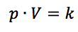
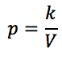
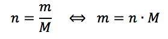
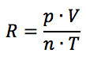
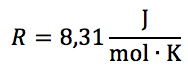
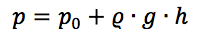

Vi vil undersøge om Boyle-Mariottes lov er rigtig. Loven siger at for en indespærret gas vil produktet af trykket og rumfanget være konstant, hvis ellers temperaturen er den samme. Det kan udtrykkes ved formlen:
hvor p er trykket i Pascal, V er volumet i kubikmeter og k et fast tal (en konstant).
En anden måde at udtrykke det på er ved at sige at tryk og rumfang er omvendt proportionale med hinanden:
Til forsøget benyttes en 60 ml injektionssprøjte og en trykmåler. Sprøjten indstilles på 40 ml og forbindes med en trykmåler via en plastslange. Herefter noteres trykket for forskellige sprøjterumfang. Til sidst bestemmes slangens rumfang ved at måle dens længde og diameter. Lav en graf med rumfanget på x-aksen og trykket på y-aksen. Som tendenslinje skal du benytte "potensfunktion". Passer formlen med teorien?
- Du skal bestemme luftens densitet og lave en graf over volumen som funktion af antal mol. Øvelsen kan slås sammen med bestemmelse af gaskonstanten. Det sparer tid.
Til forsøget benyttes en metaldåse med cykelventil, en gasmåler (vandpiben) og en vægt. Metaldåsen vejes først og fyldes derpå med atmosfærisk luft fra cykelpumpen. Dåsen vejes igen og luften ledes ind i gasmåleren. Her aflæses rumfanget ved vandoverfladerne i samme niveau. Så er trykket det samme som lufttrykket. Bestem derved densiteten af luften. Gentag forsøget fire gange og bestem en gennemsnitsdensitet. Sammenlign med tabelværdien på 1,29 g/l.
- Du skal bestemme trykket i luften som funktion af luftens masse.
Forsøget er næsten magen til. Dåsen vejes tom og der fyldes lidt luft ind i beholderen og den vejes igen. Dernæst ledes luften til trykmåleren og trykket aflæses. Det største tryk er 2000hPa. Lav en række målinger af trykket med forskellige luftmasser. Lav en graf med trykket på x-aksen massen af luften på y-aksen. Lav en tendenslinje.
- Du skal bestemme gaskonstanten R som indgår i idealgasloven.
Samme opstilling. Dåsen vejes tom og der fyldes lidt luft ind i beholderen og den vejes igen. Luften ledes ind i gasmåleren. Her aflæses rumfanget ved vandoverfladerne i samme niveau. Så er trykket det samme som lufttrykket. Gentag forsøget et par gange. Bestem antallet af mol luft med formlen:
hvor molmassen for luft er 29,0 g/mol. Bestem gaskonstanten ved hjælp af udtrykket:
Sammenlign den fundne værdi med tabelværdien:
- At undersøge om Charles lov er rigtig. Loven siger at for en indespærret gas vil trykket p og den absolutte temperatur: T = t + 273 (Kelvin) være proportionale, forudsat at rumfanget er det samme. Det kan udtrykkes ved formlen:
Gassen er indesluttet i en glasbeholder og dens tryk måles ved hjælp af kviksølvmanometret. Kviksølv er et giftigt stof, derfor skal opstillingen være placeret i en bakke, hvis kviksølvet skulle løbe ud. Hvis det sker tilkald da læreren. Der er ingen grund til at trykke på panikknappen.
Beholderen nedsænkes i et vandbad (den skal være helt neddykket). Efter at have rørt rundt i vandbadet i nogle minutter, kan vi gå ud fra at temperaturen i vandet (måles med et termometer) er den samme som i gassen. Kviksølvmanometrets højre gren er forskydelig og før hver aflæsning indstilles den så overfladen i den venstre gren står ud for en fast valgt højde h1. Højden h2 i den højre overflade måles og gassens tryk kan nu beregnes ud fra dybdeformlen:
hvor p0 er dagens tryk i Pascal, ρ er kviksølvs massefylde 13600 kg/m3 og h = h2 - h1.
Sammenhørende værdier af trykket p og temperaturen t bestemmes ved 5 – 10 forskellige temperaturer mellem 20o C og 100o C. Efter sidste måling skal højre manometergren sænkes til den oprindelige position ellers løber kviksølvet tilbage i beholderen. Lav en graf med temperaturen på x-aksen og trykket på y-aksen. Hvad er det laveste tryk og dermed temperatur du kan have ud fra dit forsøg.